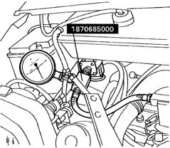

1044EB Check on methane low pressure circuit
- Path
- Test > 10 ENGINE > 1044 FUEL CIRCUIT PUMP/AND DEVICES > 1044E gas pressure control device > 1044EB Check on methane low pressure circuit
- Kind
- test / check procedure
- Applies to
- all engines; all production periods; only with equipment: BIPOWER
- Interactive page
- https://sloeber94.github.io/elrnDB-fDbl/en/#/2585343
Applies to: all engines; all production periods; only with equipment: BIPOWER
Place the three way connector 1870685000 between the low pressure pipe and the methane distribution manifold (after having moved the power assisted steering fluid reservoir to the side);
Connect a pressure gauge with a 1/2' socket and 16 bar end of scale.
Let the engine run normally on methane and check that the pressure is between 8 and 10 bar.
If the value is lower, also check that the pressure upstream of the reduction unit is more than 15 bar. If this is the case, replace the reduction unit.
